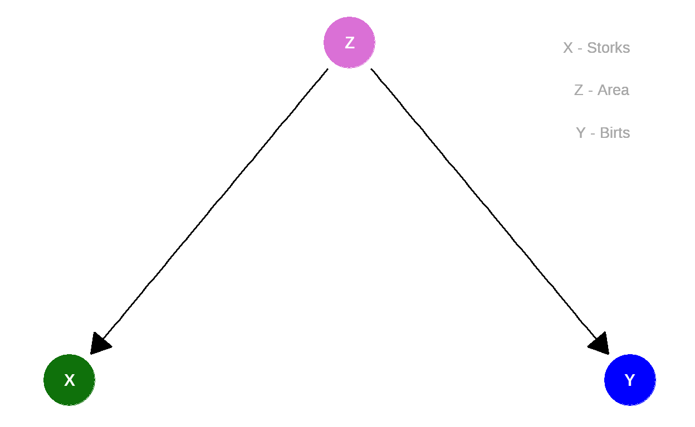

Lernziele
In diesem Modul lernen Sie:
was eine kausale Gabel ist;
was ein Confounder ist;
dass gemeinsame Ursachen häufig zu Verwirrung führen.
Herzlichen Glückwunsch!
Ein häufiges Motiv auf Glückwunschkarten zur Geburt eines Kindes ist ein Storch.

Quelle: https://pixabay.com/de/vectors/baby-vogel-lieferung-weiblich-1299514/
Aber in der Schule haben wir gelernt, dass Störche gar nicht die Kinder bringen.
Oder etwa doch?
Die Datenlage
Robert Matthews hat sich Anfang des Jahrtausend die Mühe gemacht Daten für die Fragestellung zu sammeln (Quelle):

Sie sehen: Es gibt Länder mit vielen Störchen – und gleichzeitig mit vielen Geburten. Und Länder mit vergleichsweise wenigen Störchen – und gleichzeitig wenigen Geburten.
Korrelation
Der Korrelationskoeffizient zwischen der
\[r_{\color{green}{x},\color{blue}{y}} = 0.62.\]
Der Korrelationskoeffizient liegt immer zwischen \(-1\) und \(+1\). Bei negativen Zusammenhängen (z.B. zwischen Preis und Absatzmenge) wird er kleiner als Null; bei positiven Zusammenhängen (z.B. zwischen Einkommen und Ausgaben) wird er größer als Null.
\(r_{\color{green}{x},\color{blue}{y}} = 0.62\) ist also ein relativ großer, positiver Zusammenhang.
Gilt also doch folgender Graph?
Ergänzung: Mit einem p-Wert von \(0.008\) wird eine Korrelation wie die gefundene signifikant genannt – zum üblichen Signifikanzniveau \(\alpha = 5\%\). Das heißt, die Wahrscheinlichkeit in einer zufälligen Stichprobe einen mindestens so großen Korrelationskoeffizient wie den beobachteten von \(|r_{\color{green}{x},\color{blue}{y}}| = 0.62\) zu erhalten, ist, wenn in der Grundgesamtheit keine Korrelation vorliegt (\(H_0: \rho =0\)), klein.
Um beliebte Fehlinterpretation des p-Wertes auszuschließen: Das bedeutet nicht, dass die Wahrscheinlichkeit dafür, dass kein Zusammenhang vorliegt, bei \(0.008\) liegt. Es bedeutet auch nicht, dass die Wahrscheinlichkeit dafür, dass Störche nicht die Ursache der Geburten sind, bei \(0.008\) liegt.
Andere Erklärungen
Überlegen wir uns mögliche Alternativerklärungen. Wie sieht eigentlich der Zusammenhang zwischen der Fläche des Landes und der Anzahl Geburten aus?
Anscheinend gibt es auch einen Zusammenhang zwischen der Größe eines Landes und der Anzahl Geburten.
Aber nicht nur die Anzahl der Geburten steht mit der Fläche im Zusammenhang, sondern auch die Anzahl der Störche:
Confounder
Hieraus ergibt sich eine mögliche Alternatvierklärung. Die Größe
eines Landes, die

Die
(Natürlich gibt es potentiell noch zahlreiche weitere gemeinsame
Ursachen der
Gabel
Auch komplexe kausale Diagramme bestehen aus relativ einfachen Grundelementen. Neben der Kette aus Modul 4 kommt jetzt die Gabel (engl.: fork):
\[\color{green}{X} \leftarrow \color{violet}{Z} \rightarrow \color{blue}{Y}\] Sowohl der Wert von \(\color{green}{X}\) als auch der Wert von \(\color{blue}{Y}\) hängen kausal ab von \(\color{violet}{Z}\), das strukturelle kausale Modell sieht wie folgt aus: \[\begin{eqnarray*} \color{violet}{Z} &=& U_{\color{violet}{Z}},\\ \color{green}{X} &=& f_{\color{blue}{X}}(\color{violet}{Z},U_{\color{green}{X}}),\\ \color{blue}{Y} &=& f_{\color{blue}{Y}}(\color{violet}{Z},U_{\color{blue}{Y}}). \end{eqnarray*}\]
Wird der Wert von \(\color{violet}{Z}\) geändert (\(do(z)\)), ändern sich die Werte von \(\color{green}{X}\) und \(\color{blue}{Y}\).
Vergleich Kette und Gabel
Der kausale Pfad bei einer Kette von \(\color{green}{X}\) nach \(\color{blue}{Y}\) sieht wie folgt aus: \[\color{green}{X} \rightarrow \color{violet}{Z} \rightarrow \color{blue}{Y}\] \(\color{violet}{Z}\) hört auf \(\color{green}{X}\) und \(\color{blue}{Y}\) auf \(\color{violet}{Z}\). Wird \(\color{green}{X}\) geändert (\(do(\color{green}{X}=\color{green}{x})\)), ändert sich die Verteilung von \(\color{violet}{Z}\) und damit auch die von \(\color{blue}{Y}\).
Bei einer Gabel gibt es hingegen keinen kausalen Pfad von \(\color{green}{X}\) nach \(\color{blue}{Y}\): \[\color{green}{X} \leftarrow \color{violet}{Z} \rightarrow \color{blue}{Y}\] Zwar hört immer noch \(\color{blue}{Y}\) auf \(\color{violet}{Z}\), \(\color{violet}{Z}\) aber nicht mehr auf \(\color{green}{X}\), sondern umgekehrt, \(\color{green}{X}\) hört auf \(\color{violet}{Z}\). Wird \(\color{green}{X}\) geändert (\(do(\color{green}{X}=\color{green}{x})\)), ändert sich die Verteilung von \(\color{violet}{Z}\) nicht, und damit auch nicht die von \(\color{blue}{Y}\).
Adjustierung
Was ist zu tun, um einen möglichen (totalen) kausalen Effekt von \(\color{green}{X}\) auf \(\color{blue}{Y}\) in einer Gabel (\(\color{green}{X} \leftarrow \color{violet}{Z} \rightarrow \color{blue}{Y}\)) zu bestimmen?
Der Wert des Confounders \(\color{violet}{Z}\) muss berücksichtigt
werden. Im Beispiel der y ~ x das
Modell y ~ x + z verwendet werden.
Die Variable flaeche. Ändern Sie den Code entsprechend und
gucken Sie, ob und wie sich der geschätzte Zusammenhang von
stoerche und geburten im Modell ändert.
lm(geburten ~ stoerche, data = StoercheGeburten)lm(geburten ~ stoerche + flaeche, data = StoercheGeburten)Während ohne Berücksichtigung der
Tatsächlich ist schon in diesem Modell der Effekt nicht mehr statistisch signifikant verschieden von 0. Der beobachtete Mini-Zusammenhang kann also auch nur Zufallsschwankungen widerspiegeln. Und natürlich könnte es darüber hinaus noch weitere Konfundierende geben.
Zusammenfassung
Um den (totalen) kausalen Effekt von \(X\) auf \(Y\) in einer Gabel \[X \leftarrow Z \rightarrow Y\] zu bestimmen, muss der Confounder \(Z\) berücksichtigt werden. Wird \(Z\) nicht berücksichtigt, bleibt die Gabel offen und ein nicht-kausaler Zusammenhang zwischen \(X\) und \(Y\) fließt in die Analyse ein. Die Berücksichtigung kann beispielsweise erfolgen durch einen stratifizierten Vergleich oder durch Aufnahme der Variable in ein lineares Modell. Wird so korrekt adjustiert, dann ist die Gabel geschlossen und beeinträchtigt nicht mehr die Interpretierbarkeit der Analyse.
Ausblick: Ach du liebe Zeit
Wird die gemeinsame Entwicklung von zwei Variablen über die Zeit betrachtet, so erzeugt die liebe Zeit häufig hohe Korrelationen. So z.B. zwischen der Scheidungsrate in Maine und dem Pro-Kopf-Verbrauch von Magarine:

Quelle: Tyler
Vigen: Spurious Correlations
Grund für die hohe Korrelation ist einfach nur, dass beides, sowohl die Scheidungsrate als auch der Konsum von Magarine, im Laufe der Zeit zurückgegangen ist. Weder führten die weniger Scheidungen zu weniger Magarinekonsum, noch der Rückgang des Magarinekonsums zu weniger Scheidungen.
Eine einfache Simulation eines Random Walks mit Drift
verdeutlicht das Phänomen. Hier haben beide Variablen einen Trend – aber
ansonsten haben sie nichts miteinander zu tun, also weder ist
x1 die Ursache von x2 noch umgekehrt.
Hinweis: Der Zufallszahlengenerator ist nicht gesetzt, d.h.
kein set.seed(). Daher ergeben sich aufgrund zufälliger
Variation (Rauschen) unterschiedliche Ergebnisse beim
wiederholten Ausführen.
# Anzahl Zeitpunkte
n <- 100
zeitpunkte <- 1:n
# Drift
d1 <- 0.1
d2 <- 0.2
# Vektoren bereitstellen
x1 <- numeric(n)
x2 <- numeric(n)
# Startwerte (Zeitpunkt 1)
x1[1] <- 0
x2[1] <- 0
# Simulation Random Walk mit Drift über Schleife
# Neue Beobachtung = Vorherige Beobachtung + Drift + Zufall
for (i in 2:n)
{
x1[i] <- x1[(i-1)] + d1 + rnorm(1, mean = 0, sd = 1)
x2[i] <- x2[(i-1)] + d2 + rnorm(1, mean = 0, sd = 1)
}
# Datentabelle
RandomWalk <- data.frame(
zeitpunkte = zeitpunkte,
x1 = x1,
x2 = x2
)
# Abbildung
gf_line(x1 ~ zeitpunkte, color = "orange", data = RandomWalk) %>%
gf_line(x2 ~ zeitpunkte, color = "purple", data = RandomWalk) %>%
gf_labs(y = "Entwicklung")
# Korrelation (inkl. Test)
cor.test(x1 ~ x2, data = RandomWalk)Hinweis
Bitte melden Sie Fehler, Unklarheiten und Verbesserungsvorschläge hier.
Das Vorhaben Was, wie, warum? Einstiegskurs Kausale Inferenz (WWWEKI) wird mit Mitteln des Bundesministeriums für Bildung und Forschung unter dem Förderkennzeichen 16DHBQP040 gefördert.